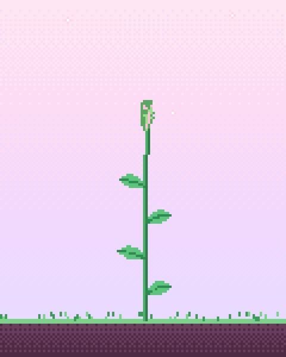
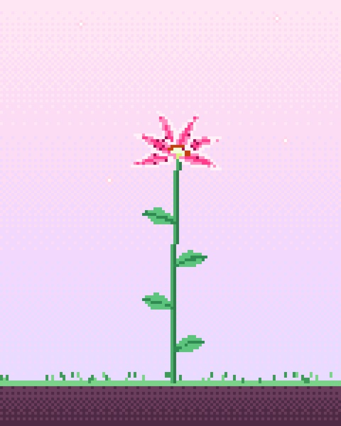
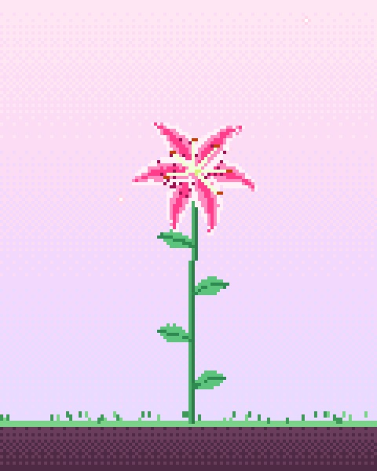
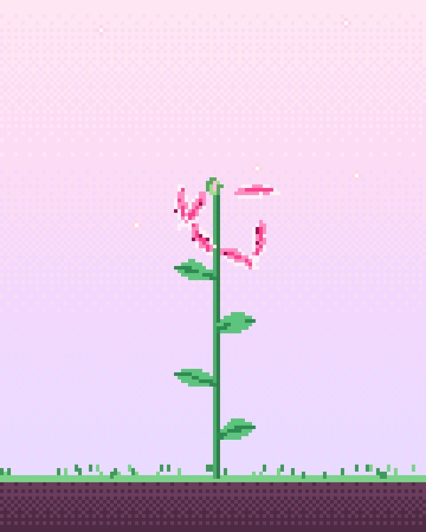
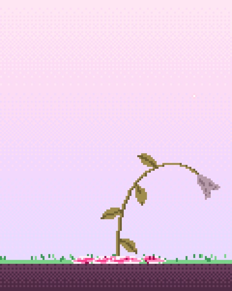
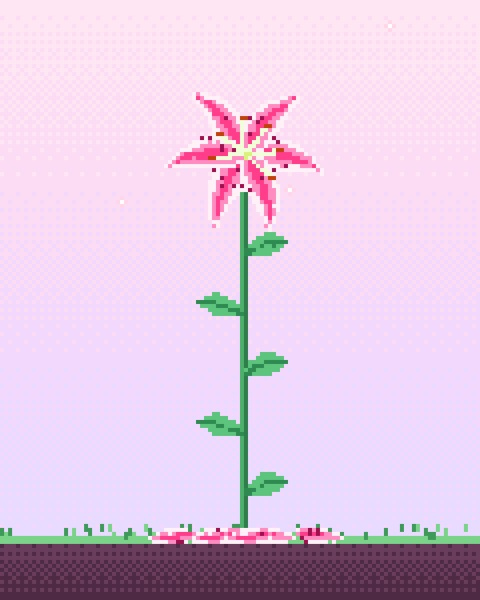
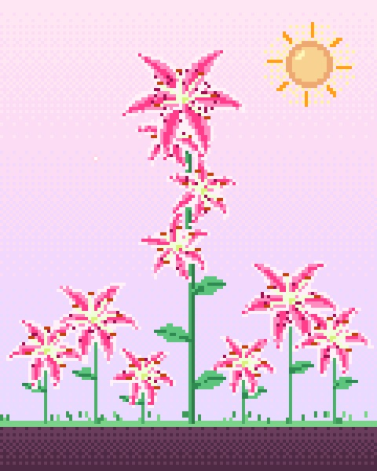
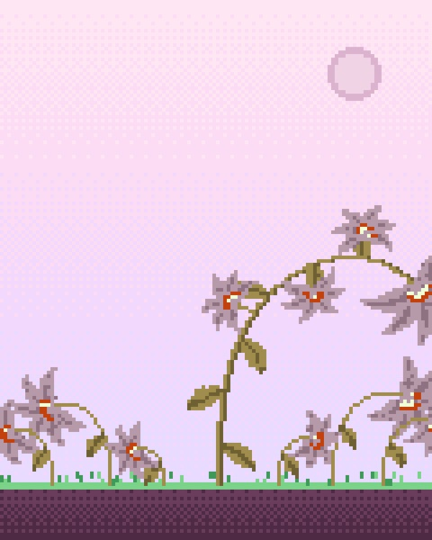
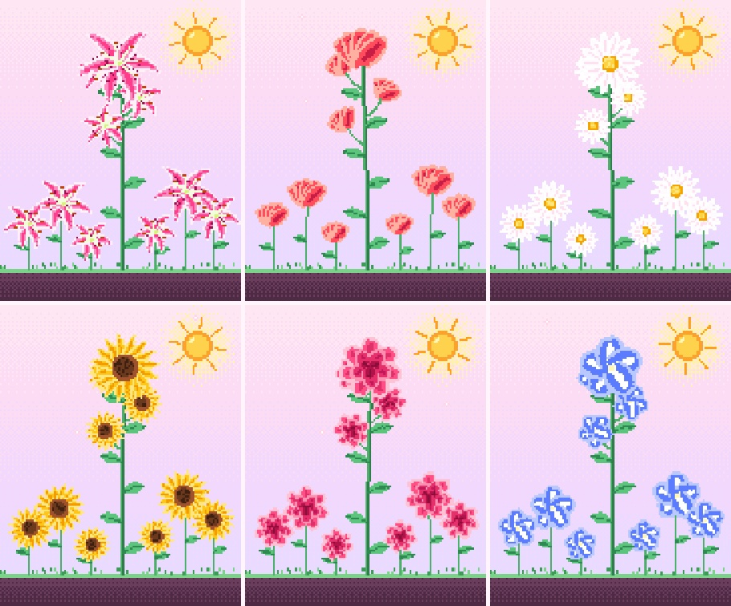
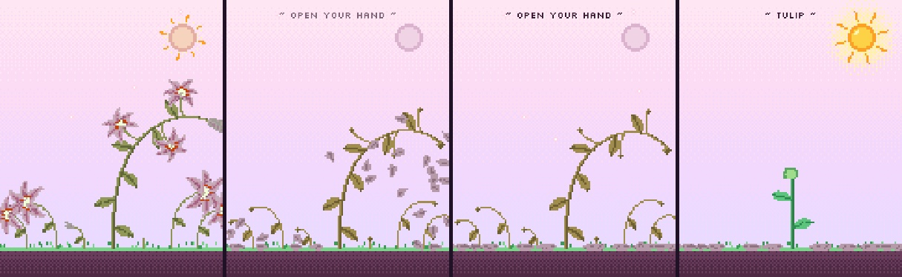

The camera picture is split down the middle by a pink line. The left side belongs to the flower hand and the right side to the stem hand.
| Hand | Gesture | What the lily does | Read by |
|---|---|---|---|
| left | pinch wider / closer | blooms open and stretches its petals / closes back into a bud | handPose |
| left | snap the pinch shut | the six petals fall off and flutter to the grass, where they lie for 10 s and then dissolve. A new bud grows back in 3 s | handPose |
| right | open palm | the stem grows taller, with a new leaf every 15 pixels, and recovers from wilting. The sun lights up | my CNN |
| right | keep the palm open | three little lilies sprout off the stem, then six more come up out of the grass one after another | my CNN |
| right | fist | wilts: the stems bend over, everything turns brown, the flowers droop, and the sun goes pale. Opening in time revives it | my CNN |
| right | fist until it's all dead, then open | the moment it dies, every flower drops its petals and only brown seed pods are left, with “~ open your hand ~” at the top. The next open palm grows a sprout of the next kind: lily → tulip → daisy → sunflower → rose → morning glory → lily again | my CNN |
Why two different models? The class example is a classifier. It answers “which of my labels is this picture?”, so it fits the stem hand well: open, fist, or no hand at all. A pinch is a distance, though, not a category. A classifier can't tell me how open my fingers are, so the flower hand uses handPose keypoints (thumb tip to index tip, divided by the palm length so it reads the same near or far from the camera). Closing slowly closes the flower. Only a snap, from at least 0.55 open to almost touching within 0.4 seconds, plucks the petals.
Until the CNN is trained, handPose stands in for the stem hand too, so the lily responds right away. It compares how far the four fingertips reach from the wrist with how far their knuckles are (about 1.8–2 with the palm open, about 1 in a fist). The sketch shows yellow dots on those fingertips. Once you train, the CNN takes over.








Six kinds of flower. Each time a fist kills the garden, the next open palm starts it again as a different flower. The lily has its own drawing. The other five are rings of petals that start bunched into a green bud and spread out as they open, all the way round or (for the tulip) into a cup, some around a speckled center disc. The rose stacks three rings. The new kind's name shows above the garden for a few seconds.

